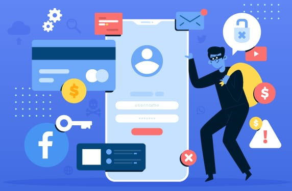

<h2 align="center" class="style1">TIPS N TRICK IT</h2>
<h2> </h2>
<h1>4 Cara Menjaga Privasi Media sosial</h1>
<center>
<img src="Ig.jpg" alt="Gambar 1" width="299" height="200" />
</center>
<h2>Instagram</h2>
<p>Menjaga privasi memungkinkan Anda mempertahankan kendali atas informasi dan keputusan pribadi Anda. Anda dapat memilih bagaimana dan kapan Anda membagikan informasi tentang diri Anda. Otonomi ini membantu melindungi identitas pribadi Anda dari pengaruh eksternal orang-orang yang sejak awal tidak berhak ikut campur.</p>
<ul>
<li><a href="Facebook.html">Facebook</a></li>
</ul>
<tittle>
<h4>
Berikut ini adalah Cara Menjaga Privasi di Media Sosial:</h4>
<h2>1. Periksa kembali info yang akan dibagikan </h2>
</p>
<center>
<img src="hoax.JPG" alt="Gambar 1" width="448" height="247" />
</center>
</p>
<p> Selalu cek kebenaran berita maupun info sebelum Anda kirimkan kepada orang lain agar tidak menyebarkan berita bohong atau hoaks.</p>
<h2>2. Pastikan postingan yang Anda bagikan tidak mengandung isu-isu sensitif.</h2>
</p>
<center>
<img src="isu.JPG" alt="Gambar 1" width="490" height="276">
</center>
</p>
<p>Hal ini bertujuan untuk meminimalisir adanya kesalahpahaman antar sesama pengguna media sosial ataupun tuduhan ujaran kebencian. </p>
<h2>3. Hindari menyebarkan informasi data pribadi maupun orang lain.</h2>
</p></p>
<center>

</center>
<p>dikhawatirkan data-data tersebut justru disalahgunakan oleh pihak-pihak tidak bertanggung jawab yang dapat berakibat pencurian identitas. </p>
<h2>4. Selektif memilih figur atau jenis konten yang diikuti.</h2>
</p>
<center>
<img src="konten.jpg" alt="Gambar 1" width="449" height="321">
</p>
</center>
<p>Hal ini bertujuan untuk mencegah dampak buruk bagi kesehatan mental karena perasaan cemas, inferior, hingga emosi yang sulit dikontrol akibat unggahan-unggahan yang terdapat di media sosial.</p>
</body>
</body>
</html>